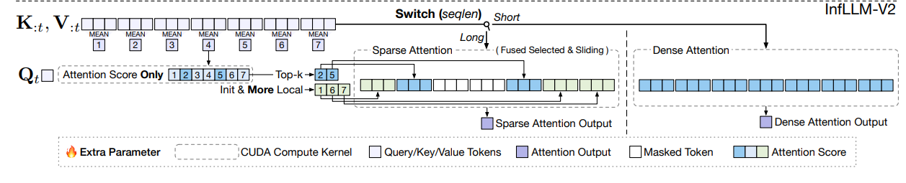
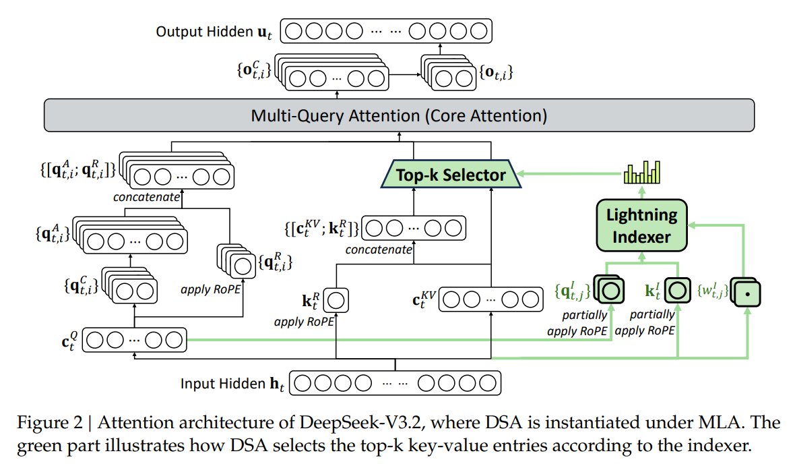
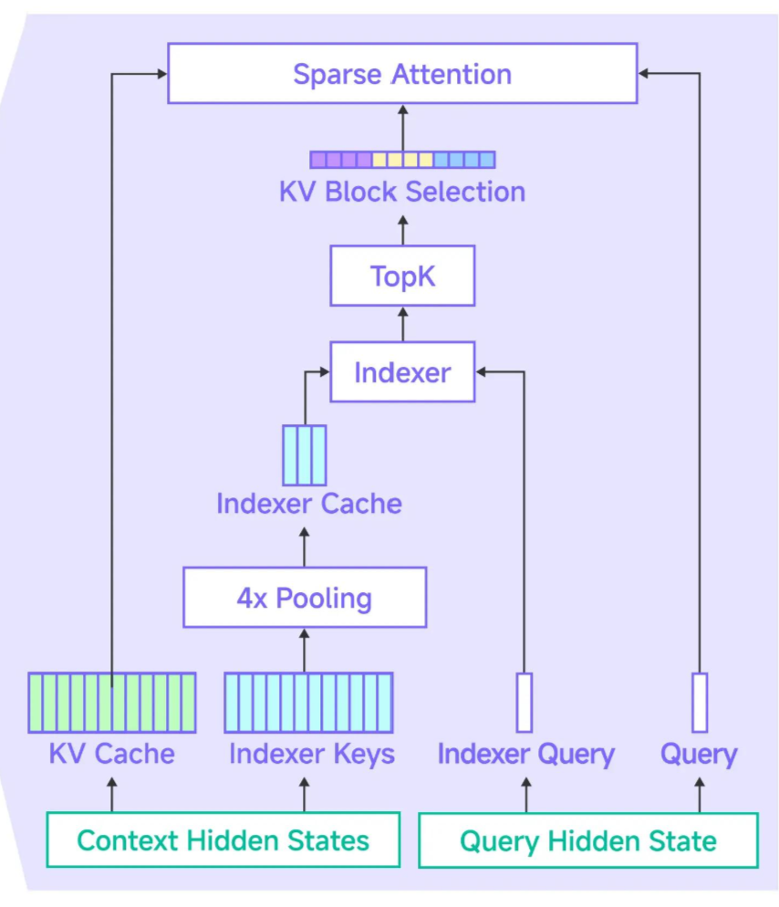
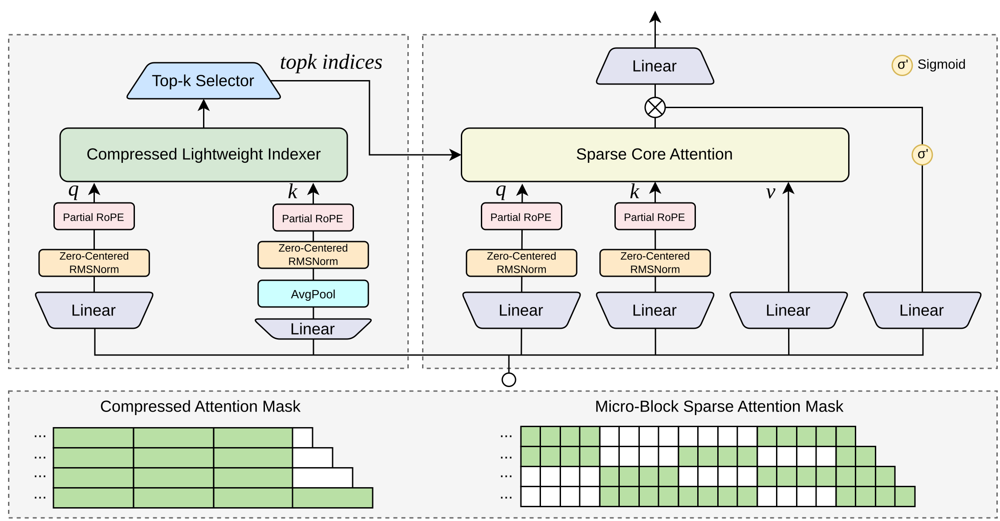
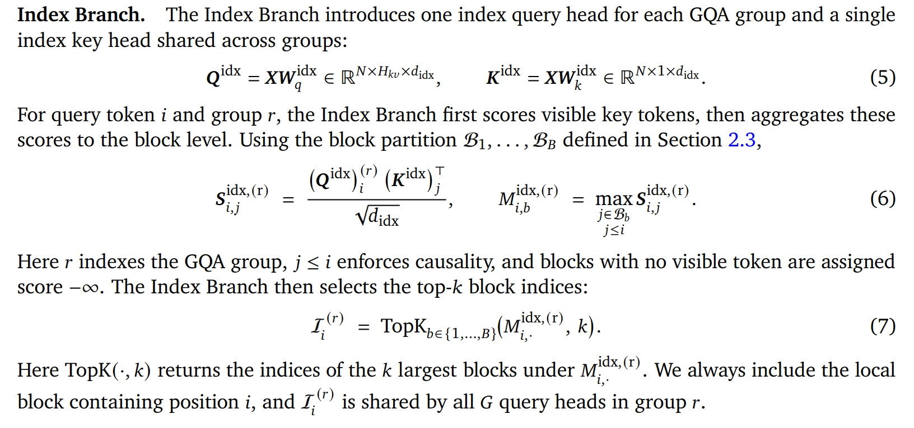

0909 组会分享：Trainable Sparse Attention
0. 简介
Long-context Sparse Attention 可以统一理解为：
代码里 S 一般以
topk_indices[S, topk]形式呈现。
其中 backbone 本身可以基本保持 MLA / GQA / 其他成熟 attention mechanism；Sparse Attention 的主要创新发生在 Trainable Indexer：决定当前 query 应该读取哪些 KV。
因此，今天工业界的演进重点并不是“重新发明 attention”，而是在不断优化这个 learned retrieval system（在这里集中体现为 indexer）：兼顾训推效率、理论计算量的降低与实际性能提升、显存访存优化、保持甚至提高模型性能（相比 full attention）等。
1. 为什么需要 Sparse Attention？
标准 causal attention：
众所周知，随着 context length
而 SWA 或者 Linear Attention 虽然是线性复杂度，但是难以精确捕捉长程信息/依赖。
因此可以把 dense attention 拆为两步：
- KV retrieval / selection：找到值得看的历史 KV；
- Backbone attention：只在 selected KV 上运行原来的 attention。
这样可以同时降低理论 FLOPS，同时保持对长程依赖的捕捉。
1 | Hidden State x / Query Q |
- Backbone：MLA / GQA 等成熟 attention；
- Indexer：负责 sparse retrieval，选出用于 backbone attention 计算的 KV
- 主要都是基于分数的 top-K 选取；
- 尽管学界有 top-p 或者门控选取等工作，但是并没有实际工业落地。因为其引入了额外的计算复杂性。
- Sparse attention architecture 的核心差异主要体现在 Indexer 设计。
2. 工业界路线概览 & Indexer 决策
| 标志模型 | Search representation | Selection granularity | Routing sharing | 核心思想 |
|---|---|---|---|---|
| InfLLM-V2 | Backbone K | Block(64) | 整层共享 | 最小化 backbone 改动 |
| DSA | Indexer K | Token | 整层共享 | learned indexer + Top-K |
| KPool-DSA (GLM5.3-flash) |
Compressed Indexer K | Micro-block(4) | 整层共享 | 先压缩 search space，再做 DSA retrieval |
| QSA (Qwen3.8) |
Compressed Indexer K | Micro-block | 整层共享 | 压缩 indexer search space + sparse retrieval |
| MiniMax MSA | Indexer K | Block(64/128) | GQA-group-wise | blockwise retrieval + hardware co-design |
| CSA / HCA DeepSeek V4 |
Compressed K | compressed unit | implementation dependent | 多尺度 memory / retrieval / attention hybrid |
除此之外比较知名的 sparse attention 架构还有 NSA、Kimi MoBA 等，但并没有工业落地。
3. 第一阶段：专职 Indexer 之前 —— InfLLM-V2
同期还有另一篇 DeepSeek NSA（Native Sparse Attention）的工作，不过二者都是类似的。
InfLLM-V2: Dense-Sparse Switchable Attention for Seamless Short-to-Long Adaptation
3.1 基本想法
直接利用 backbone 已有的 K 作为 retrieval representation：

计算复杂度的减小：
- Indexer：首先对 K 进行 mean pooling 后再和 Q 运算得到用于 top-k 选取的分数，根据分数选出 top-k 块
- 当然此处用到了 mean pooling + max pooling 的做法，以及强制选择 head/local 块
- Backbone：只对选中的块内的 token 进行 attention 计算，忽略其他 token
3.2 启发 & 局限性
启发
- 通过 top-k 选取后的稀疏注意力仍能保持一定的准确性与对长程依赖的捕捉；
- 注意力分数可以用来判断一个 token 或者 block 是否重要，进而可以利用注意力分数决定哪些 token 需要精确计算而哪些不需要；
- blockwise 的选取可以优化访存与计算效率，但 block 越大 retrieve 精度越差，block 越小 Indexer 与稀疏访存开销越大。这是一个寻找平衡的过程；
- Dense pretrain 与 sparse long decay 双阶段范式。
局限性
- 由于 Indexer 计算时使用的访存其实和原始 full attention 的量是近似的，减少的只有 QK 矩阵乘法的次数（而且这个计算减少的比值和 block size 呈线性关系，而 blocksize 增大会显著损害 retrieve 精度），因此 InfLLM-V2 并没有得到很好看的端到端加速比。能否进一步从架构上优化 Indexer 的速度并保持 fine-grained 的选择粒度？——那这样就不能使用 backbone 训出来的那一套参数了，indexer 要有自己的一套轻量参数。
- 进而很自然地有下一个问题：indexer 专职用于 topk 选取，而 topk 是不可导的。那么 indexer 的梯度从哪里来？
- InfLLM-V2 和 NSA 的做法都是通过构建 indexer 权重到 LM loss 的路径来更新其梯度（InfLLM-V2 可视作 indexer 与 backbone 参数共享），同时利用其中间注意力分数进行 topk 选取（这条路径没有给 indexer 梯度）
- 但这样的设计让 indexer 在优化时是在学习优化语义 loss 而非优化选取本身——从 indexer 职能上考虑，这本质上也是一个 proxy：把语义作为优化 topk 选取的 proxy
- 考虑到参数量和计算量，轻量化的 indexer 的语义学得往往不如 backbone（scaling law），在这种方法下 indexer 的上限其实就是 backbone 本身——这样 sparse attention 就退化成一个 training free 的 inference 加速技巧了。
- 除此之外对于 topk，还有一类做法是 STE 为代表的梯度估计（对 topk 不可导的经典做法）
- 问题：STE 把 backbone 分布得到的梯度强加给 indexer 分布得到的梯度，但是二者的初始分布不同（譬如 backbone 用预训练，indexer 用随机初始化），indexer 通过 STE 估计的梯度训练则几乎完全无法收敛，即使 topk == seqlen 训练（唯一的例外是 indexer == backbone）。
- InfLLM-V2 和 NSA 的做法都是通过构建 indexer 权重到 LM loss 的路径来更新其梯度（InfLLM-V2 可视作 indexer 与 backbone 参数共享），同时利用其中间注意力分数进行 topk 选取（这条路径没有给 indexer 梯度）
- 回顾 sparse attention 的 motivation：full attention 中很多位置的 attention score（softmax 后）都是极为接近 0 的，对最后的输出没有贡献，但 full attention 在这些位置浪费了大量算力。本质上 sparse attention 是要选取出那些对输出数值真正有影响的 token（即“backbone attention score 较高”），交给 backbone attention 进行计算。——多快好省地估计每个 token 在 backbone 的打分，而不进行 backbone full attention 运算
- 一个重要的不同：给注意力层添加专门的轻量化 Indexer 用于 topk 选取的打分；设计专门的 Indexer 优化目标，以解决 topk 不可导、indexer 职能重叠的问题。
4. 第二阶段：DSA —— Dedicated Indexer
DeepSeek-V3.2: Pushing the Frontier of Open Large Language Models
4.1 从 Backbone K 到 Dedicated Indexer K

- Backbone：成熟的 MLA
- Indexer：一个类似 MHA 的架构，位置
上的 indexer 对位置 的打分为 - Indexer 优化目标：
，其中 为 backbone attention 分数 在 head 维度上求和后 L1-norm 的结果。本质上是用 Indexer 去拟合 p 这个“main attention score”分布，将 backbone attention 的注意力分布蒸馏到 Indexer 里。 - 需要注意的是，尽管 indexer 的 q、k、w 是从 x 经过权重线性映射得到的，但是这里 x 是从 backbone detach 的。否则前层的 backbone 的梯度会被污染。
- 三阶段训练：
- Backbone pretrain
- Indexer warmup：冻结 backbone，只用 Indexer loss 训练 indexer，topk = seqlen
- CPT（Continued Pre-training）：backbone 与 indexer 同时训练，topk << seqlen。只使用 topk 选中的位置进行分布计算与 KL loss 的计算和反传。
- note：这里 Indexer warmup 想解决这样一个自举问题：如果直接进行 CPT，indexer 随机初始化，且 topk << seqlen，那么一开始如果 indexer 没有选某些 token，只选了另一些 token，那么 indexer 就可能永远也学不到那些它一开始没选中的 token 了。所以 Indexer warmup 很重要。
- Indexer 优化目标：
最重要的 architecture jump
Indexer 与 Backbone 梯度解耦，给 Indexer 单独的优化目标（拟合 backbone attention 分布，而非利用 LM loss 的梯度进行训练）。
- Indexer 的 topk 选取轻量化，更加降低训练与推理的开销，把稀疏带来的 FLOPS 的理论优势更多地转化为实际收益。解除了 InfLLM-V2 中选择粒度还是 index 效率的矛盾。但是长文本中 indexer 仍然是瓶颈。
- tokenwise 的选取更细粒度，retrieve 准确性更好，但可能导致 GPU 访存效率降低。
- 相对于利用 LM loss 给出的梯度训练 indexer，设置单独的 indexer loss 可解释性更好，更加符合工业 pipeline。
DSA 对 retrieval precision 很有吸引力，但 token-level sparse gather 可能带来新的 system bottleneck：
- indexer 计算 —— 复杂度仍然是
，尽管常数远小于 full attention - Top-K 效率 —— streaming topk MFU 低，radix 显存占用大
- irregular memory access —— topk 带来的随机访存
- sparse kernel —— 写算子很痛苦，尤其是反传 dk 引入原子加
于是后续工作开始反过来优化 Indexer 自身的 search cost 与执行粒度，一个趋势是选择粒度又重新回归 blockwise。（否定之否定.jpg）
5. 第三阶段：Compressed / Pooled Search Representation
https://z.ai/blog/glm-5.3-flash
5.1 GLM KPool-DSA
用于 GLM5.3-flash。
核心思路：不直接在长度为

note：压缩的是 search representation / search space。
可能存在的问题（在 DSA 基础上）：
- 开源 RL 与推理框架适配性：这些框架给的 kv cache 都是 tokenwise 的，但是这里如果想要充分利用 compressed indexer key 带来的优势，必须存储的是 pool wise 的 compressed key。
- 把 indexer key 横过来存？作为
[pool_size, d_i // pool_size]拼在 backbone kv 后面？——读 512+1/2/4/8 也硬件不友好。把 backbone head_dim 压缩到 510/508 之类的也在浪费算力。 - 当前 transformers 库的参考实现存的是压缩前的 indexer key，导致每次 decode 的时候都要现算 pooling
- 把 indexer key 横过来存？作为
好处：
- sparse kernel 读取 kv cache 和反传写 dk dv 的时候访存更连续了，读写 topk_indices 开销变为原来的 Pooled size 倍，可以更好地用计算掩盖显存读写时延。
5.2 QSA
https://github.com/QwenLM/Qwen3.8-Flash-Next/
https://qwen.ai/blog?id=qwen3.8-flash-next
QSA 与 KPool-DSA 有共同思想：
只是架构上有一些细微调整（减少计算量）：
- 去掉了 weighted pooling 改成 mean pooling
- RoPE 使用 Partial RoPE（KPool-DSA 为 NoPE，DeepSeek V3.2 为 Partial RoPE）
- 在 indexer MQA 多头分数聚合的时候相比 DSA 去掉了 weight，直接求和

压缩越强：
- Indexer 越便宜；
- search units 越少；
- 但 representation 准确度和信息量可能下降；
- 以及可能出现 block / micro-block over-fetch。
参考：InfLLM-V2 与 MSA 的最终每个稀疏块包含的 token 数在 64 到 128 这个量级，而这里 QSA 和 GLM-DSA 分别都是 4。
5.3 Indexer cache
https://arxiv.org/abs/2603.12201
其实也是 GLM 提出来的，说的是相邻几个 SA 层之间可以共享 indexer 选取，减少 indexer 开销。
不过现在大家都在上 hybrid 了，所以 GLM5.3-flash 也就没有用这个了。
Qwen 认为：相比跨层共享索引的方法，QSA 在每一层内部独立完成序列压缩，对跨层 Attention 相似性的依赖更小，也更适合 Linear/SWA 与 Attention 交替出现的 Hybrid 架构。
6. 第三阶段-2：MiniMax MSA
更大的 block，更多样的 topk
- DSA / QSA 都是整层共享 topk 选取结果，通过适当的 Pooling 平衡 indexer 选取能力与计算速度
- MSA 则让每层中 backbone GQA 的每个 query group 都拥有自己的 indexer 和 topk 选取，采用大块提高效率
- 具体而言：backbone GQA 的 query 头数为 H_Q，kv 头数 = query group = H_KV
- 它让 indexer 为一个 query 头数为 H_KV 的 MQA，每个 indexer query 分别进行 topk 选取并提供给 GQA 的对应 query group

我的一些分析：
- 相对于 DSA 等，MSA 每层会进行多组 topk 选取，计算开销更大，但是开了 TP = H_KV 后其实是一样的。
- 而且这样框架更好写一些。TP 和 CP 都可以做，TP 组之间不需要同步 topk 选取结果，因为 query group 之间其实是独立的。
- MSA 的 backbone 是 GQA，DSA 的 backbone 是 MLA，MSA 可以视作 DSA 在 GQA 上的合理扩展。
7. 主要设计决策总结
总结一下，主要的设计决策可以归结为以下 4 个维度：
- Search Representation：backbone key / indexer key / compressed indexer key
- 决定了 indexer k cache 显存开销以及 indexer 的信息量
- 需要和 infra 进行配合
- Selection Granularity：token / micro-block / block
- 决定了 indexer 前向开销、访存连续度、算子效率等
- 总之，Block size 越小，retrieve 能力越接近 token-level precision；block 越大，GPU execution 越规整，但 over-fetch 可能越明显。
- Routing Sharing：query group / attention layer / attention layers
- 同样决定了 indexer 前向开销，以及模型整体的 retrieve 能力
- Position Encoding
- 这个主要还是依赖实验。
- 目前现有落地模型一般采用 NoPE 或者 partial RoPE，同时 indexer 和 backbone 保持一致。
- 不过也不一定？可以验一下
- DeepSeek V3.2 主要是 partial RoPE，因为它只有 DSA 层；GLM5.3-flash 是 NoPE；Qwen3.8 是 RoPE。
- 以及如果上 indexer rope 的话，上低频部分还是高频部分？hybrid 情况下又有什么不同？
8. Indexer 架构与训练方法
上面四个是 architecture-level axes；除此之外还有不少实验要做。
8.1 Indexer 前向
- Indexer head dim 等
- 需要评估 Indexer 的表示能力和 backbone 之间的平衡
- 当然头数一般都是上 16 或者 32，因为适合 GPU 硬件
- indexer 一般是一个 MQA 选出一个 topk，那么跨头打分如何做？
- DSA：先 relu 后按照 weight 聚合
- QSA：先 relu 后 mean reduction
- MSA：不 relu（因为各头 query 选各的）
特别需要验证：ReLU 到底是否必要？可否换成别的或者去掉？
- Pooling / key compress 具体怎么做
- Mean pooling? Weighted pooling?
- 还是参考 InfLLM-V2 的双层 Pooling（mean + max）？
- 块大小和选中粒度具体开多大？
8.2 Indexer 反向
indexer 训练可以视作一个分布拟合 / 注意力 pattern 的知识蒸馏的过程。
- student：indexer
- teacher：backbone
现在都普遍采用 KL 散度，因为它的梯度很好融到算子里（
不过还有一些的点可以验证：
- 其他 loss：Fenchel–Young Loss、List MLE
- teacher 的聚合方式：从 backbone logits [S, H, S 或者 topk]，怎么聚合到 [S, topk] 的分布？
- Adaptive / trainable loss func
8.3 训练
有一个很重要的问题：indexer 的自举问题。
具体而言，indexer 在 CPT 阶段收到的梯度来自于它选中的 token。那么它没选择的 token，如果实际上是 ground truth 意义上很重要的 token，那么它是否几乎不可能学会？
为解决这个问题，DeepSeek V3.2 提出的是 dense warmup + sparse CPT 的双阶段训练。token 的分配需要考虑。
8.4 其他需要处理的事项
- hybrid 架构适配
- 一些结论在纯 SA 架构和 SALA 架构可能不同
- 训练框架适配
- 尤其是 DSA 这类整层一个 indexer，如果开 TP 则需要将 indexer 选取结果广播到每一个 TP 进程，在 indexer 反传的时候还需要从各个层的 backbone attention score 聚合出 main attention score，再算 indexer 梯度。
- MSA 如果 TP ≤ H_KV 的话则没有这个问题
- 后训练与推理框架适配
- 以及后训练 RL 的时候，indexer 的梯度是否需要更新还是冻结？
- 算子设计
- Streaming topk 还是 Radix topk？如果显存可以接受（譬如开 CP），那上 Radix 可以带来极为显著的收益，尤其是 long decay + pool size 较小的情况
- Sparse backbone attention 的 fwd 和 bwd，访存优化
- 一些理论上的问题
- Dense attention distillation 与最终 LM loss 的一致性是否足够？Indexer loss 真正应该优化什么？以及是否有其他更好的 proxy？
- 足量的 CPT 能否真的解决 indexer 在 warmup 数据和模型上的 bias？是否考虑需要交替进行或者在 ckpt 监控？
- 如果把 kv cache 视作 in-context learnt 的权重的话，indexer 是否也是一种 MoE 来 route 以决定启用哪些权重？与 memory offloading 能否结合？